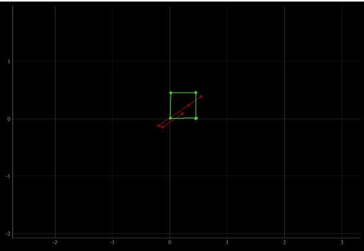

The purpose of this lab is to set up a simulator for our robot to navigate the maze from lab 9.
Setup
Most of this lab was spent setting up the simulator. The simulator was made in python and is run through Jupyter Lab.
With the simulator setup, simple simulations of the robot navigating the room were made to ensure understanding of the simulator.
Lab Sections
Part 1: Functionalities:
The simulator can be run through a simple GUI or by the commands START_SIM() STOP_SIM() RESET_SIM() START_PLOTTER() STOP_PLOTTER() RESET_PLOTTER
The simulator can then be run through commands or using the mouse and keyboard. This the following sections of this lab make use of the commands, which can be seen below.
The robot certainly changes its orientation during the spin, but the error ended up being a lot less than what I expected given the speed at which it spins.
the 5 graphs below show the polar coordinates of the ToF measurements. These coordinates include the points from the second rotation, which I expected would cause a lot of error.
However, you'll notice that points on close edges of the walls are consistent, showing that there isn't much error between the first and second rotation.
Part 2: Open Loop Control
For this portion of the lab, I made my robot drive in a square using open loop control. The outline of the square can be seen below.

Getting the robot to drive in the square took trial and error, as the robot was unable to make decisions for itself. The green box is the path the robot followed, whereas the red is the odometry reading from the robot.
As can be seen, the odometry reading is not very reliable. The code used to make these plot can be seen here:
pose, gt_pose = cmdr.get_pose()
cmdr.plot_odom(pose[0], pose[1])
cmdr.plot_gt(gt_pose[0], gt_pose[1])
To make the robot go forward, I used cmdr.set_vel(.3, 0) and to turn I used cmdr.set_vel(0, 1.04). Between these movements, I used asyncio.sleep and adjusted the amount of time slept for forward movements and turns until it drove in a square.
I ended up having the robot go forward for 1.5 seconds, and turn for 1.04 seconds. Open loop control is not ideal, especially when trying to repeat this square. After running the robot in a square three times, the robots path drifted by a noticeable amount.
Part 2: Closed Loop Control
Next, I made the robot navigate around the room using closed loop control. The controller is very simple, and the code can be seen below.
while(1):
dist = cmdr.get_sensor()
if dist - setpoint <= .25:
PTurn()
else:
PForward()
The setpoint I gave the robot was .1.
I wanted to have the robot turn 90 degrees after and obstacle, but found this very unreliable when using the get_pose() command.
This is due to the command running slow compared to the speed at which the robot turns. I had to turn the robot at extremely slow speed to make this
method reliable, which is not worthwhile.
Two other methods of turn I thought of involved basing it off the front sensor. One way would be to just turn whenever you're too close to a wall until your distance from the wall is greater than some threshold.
another similar way would be to have the robot spin on its axis until it found the furthest distance to a wall from where it currently is. However, all three methods above lead to the same issue which can be seen in the video below.
Because the robot is entirely dependent on its front sensor, it will hit walls due to the robots width. The .1 setpoint I have the robot seems to be about how close it can get directly to a wall without it ever hitting when turning around,
but this doesn't prevent situations when the robot drives close to a wall on one of its sides. It may be possible to make a simple controller that prevents the robot from crashing by having it spin on its axis to figure out where to go next,
but I did not implement this. A better solution will be implemented in lab 11. As for the robot’s max speed, I found it to be about .8. Anything higher would cause the robot to occasionally crash into a wall with a setpoint of .1.